骨骼的性状
如果我们一方面想到人们多么常常地说构造的重要部分绝不变异；另一方面又想到化石物种在骨骼上的差异是多么微小，那么家养兔的头骨以及其他骨的变异性就值得我们很好地注意了。一定不能假定下面就要谈到的那些比较重要的差异严格地是任何一个品种所特有的；所能说的只是在某些品种中一般地都有这些差异。我们应当记住，选择未曾用来固定骨骼上的任何性状，并且家养兔在一致的生活习性下也不必自谋生存。对于大多数的骨骼上的差异，我们还不能解释，但是我们将会看到由于小心的营养和不断的选择而引起的身体的增大，对于头部发生了特别的影响。甚至耳朵的增长和垂下也稍微地影响了全部的头骨。缺少运动显然改变了四肢在同体部比较下的比例长度。
我准备了两只肯特（Kent）野生兔的骨骼，一只谢特兰群岛（Shetland Islands）兔的骨骼以及一只爱尔兰的安垂姆（Antrim）兔的骨骼，作为比较的标准。因为来自如此远隔地区的四个标本的所有骨都是彼此密切相似的，几乎没有呈现任何可以觉察的差异，所以可以作出这样的结论：野生兔的骨在性状上一般是一致的。
头骨 我曾仔细地检查了10只大型垂耳兔的头骨和5只普通家养兔的头骨，普通家养兔同垂耳兔的唯一差异，只是前者没有后者那样大的体部或耳朵，然而两者都比野生兔大。先谈一谈那10只垂耳兔：在所有这些垂耳兔中，头骨的长度在同其宽度的比较下都是显著长的。一只野生兔的头长是3.15英寸，一只大型玩赏兔的头长是4.3英寸；然而那包容脑子的头颅的宽度，在二者却几乎是完全一样的。甚至取颧弧（zygomatic arch）的最宽部分作为比较的标准，垂耳兔的头骨长度在同其宽度的比较下还长出四分之三英寸。头的高度几乎同头的长度成正比例地增加了，只是宽度没有增加。包容脑子的顶骨和枕骨无论从纵的方面来看，或从横的方面来看，其弧度都比野生兔的为小，所以头颅的形状是稍有差异的。头骨的表面是比较粗糙的，凸凹不平，缝合线比较显著。
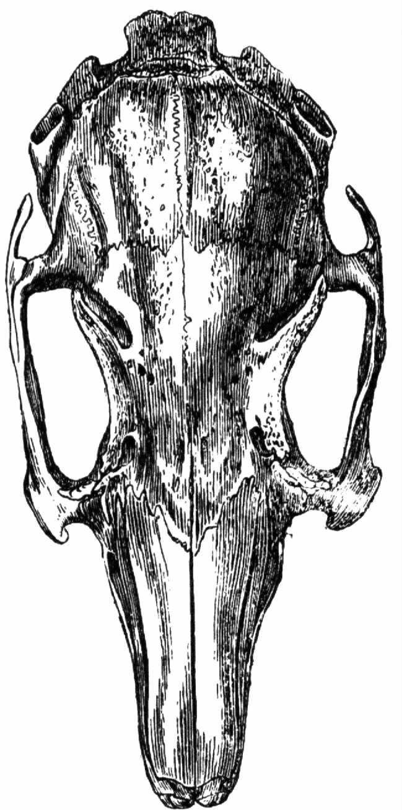
图6 野生兔的头骨
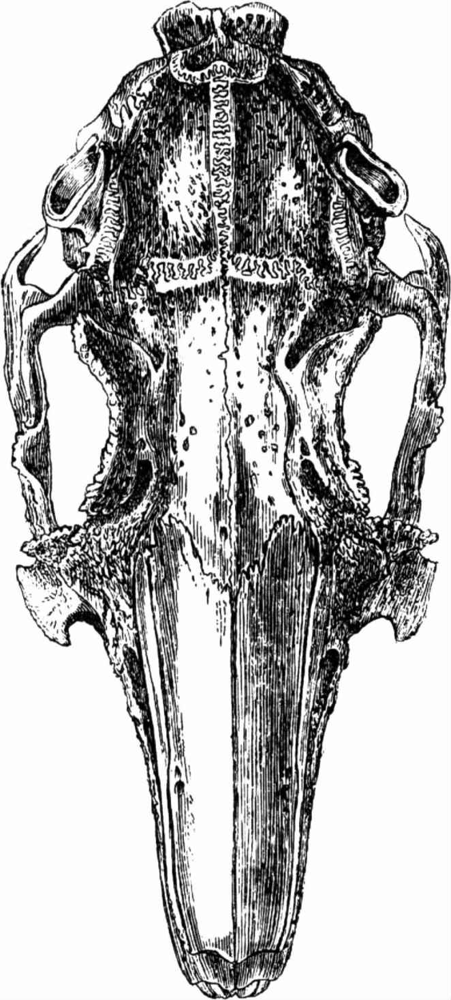
图7 大形垂耳兔的头骨
当把大型垂耳兔的头骨同野生兔的头骨进行比较时，虽然其长度在同其宽度的比例上是很长的，但在同其体部大小的比例上它并不是很长的。我检查的大型垂耳兔，并不算肥，它的体重还超过了野生标本的两倍；但其头骨的长度则远远地没有达到两倍长。即使我们取比较合理的体长标准——即从鼻子到肛门，头骨的长度平均还比其应有的长度短三分之一英寸。另一方面，小型的野化波托·桑托兔的头长在同其体长的比例上约长四分之一英寸。
这种头骨的长度在同头骨的宽度的比例上所表现的增长，我发现是一种普遍的性状，不仅大型垂耳兔是如此，所有人工育成的品种都是如此；例如，安哥拉兔的头骨就很好地说明了这一点。最初我对这一事实感到非常奇怪，而且不能想象家养为什么会产生这样一致的结果；但它的解释似乎在于以下的情形：人工育成的族在无数世代中都处在严密被拘禁的状况下，因而很少有机会去使用它们的感觉、智能或随意肌（voluntary muscles）；结果它们的脑子，就像我们将要充分看到的那样，并没有按照身体大小的比例有所增大。因为脑子没有增大，包容脑子的那个骨箱也就不会增大；通过相关作用，这就影响了整个头骨从这一端到那一端的宽度。
在大型垂耳兔的所有头骨中，额骨的上眼窝板、即上眼窝突起远比在野生兔的头骨中为宽，而且一般地更向上方突出。颧弧的后方、即颧骨的突出一端是比较宽而钝的；图8中的标本以显著的程度表示了这种情形。这一端比在野生兔中更接近于耳道（auditory meatus），在图8中可以很好地看到；不过这种事情主要是取决于耳道方向的变化的。在几个头骨中，间顶骨（inter-parietal bone，参阅图9）的形状大有差异；一般它比野生兔的更椭圆一些，换句话说，就是沿着头骨的纵轴方向更伸长一些。在大多数垂耳兔中，枕骨的“四角高台”[1]的后缘既不是削成平面的，也不像在野生兔中那样地微微突出，而是尖形的（如图9C）。副乳嘴骨（paramastoids）在同头骨大小的比较下一般都比野生兔的为厚。
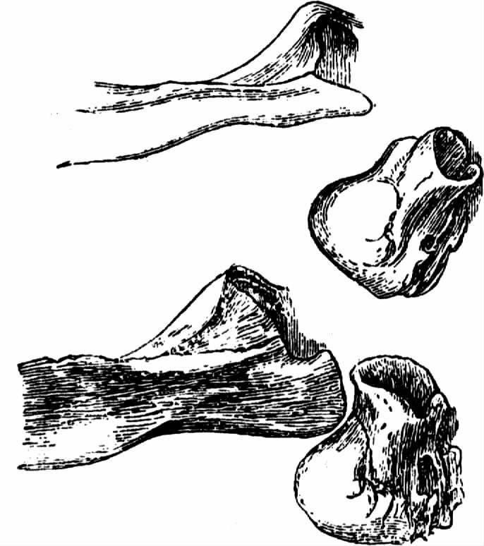
图8 颧弧的一部分，表示听道颧骨突出的一端
上：野生兔。下：山兔色的垂耳兔
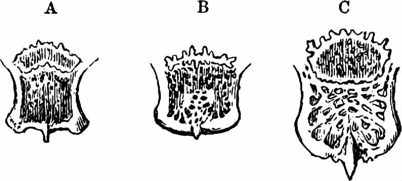
图9 头骨的后端
A．野生兔；B．马德拉附近的波托·桑托岛上的野化兔；C．大形垂耳兔
枕骨孔（图10）表现了某些显著的差异：在野生兔中，髁间的下方边缘显著地而且几乎尖锐地凹进去，其上方边缘深深地而且四方地成凹形；因此，纵轴比横轴长。在垂耳兔的头骨中，横轴比纵轴长；因为在这等头骨中没有一个髁间的下方边缘是深深凹进去的；其中五只兔没有上方边缘的凹口，三只兔有一点凹口的痕迹，只有两只兔的凹口是很发育的。枕骨孔的这等差异是值得注意的，因为非常重要的构造——脊髓在这里通过，虽然脊髓的轮廓显然并不受这个孔道形状的影响。
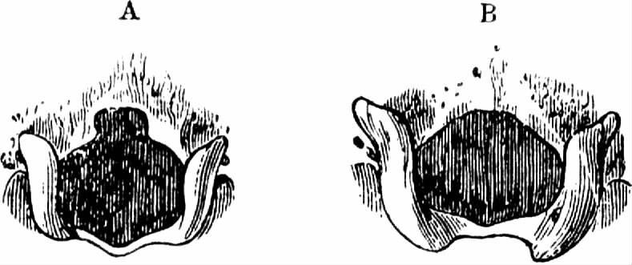
图10 枕骨孔
A．野生兔；B．垂耳兔
在所有大型垂耳兔头骨中，外耳道骨（bony auditory meatus）都显著地比野生兔的为大。4.3英寸长的一个头骨，其宽度仅比一个野生兔的头骨（3.15英寸长）稍长，但耳道的长径恰比野生兔的大两倍。耳道口更扁平，耳道的接近头骨一侧的边缘比外侧较高。整个耳道更向前方。因为当培育垂耳兔时，耳的长度以及由于它们的长度而致沿着面部垂下的性状，是可贵的主要点，所以，同野生兔相比，它们在大小、形态、外耳道骨方向上所发生的巨大变化无疑是因为对于那些具有愈益增大的耳朵的个体进行了继续的选择。半垂耳兔（参阅图5）的头骨（我曾检查过三个）很好地阐明了外耳对于外耳道骨所发生的影响，半垂耳兔的一只耳朵是直立的，另一只较长的耳朵则是垂下的。在这等头骨中，两边的外耳道骨的形态和方向有着明显的差异。更加有趣的一个事实是，外耳道骨的改变方向和增大稍微影响了同一边的整个头骨的构造。这里我举出一张半垂耳兔头骨的绘图（图11）；我们可以看出它们的顶骨和额骨的缝合线并不严格地同头骨的纵轴成直角；左边的额骨比右边的向前突出；垂耳一边的左颧弧的前后边缘都比右方的稍微靠前。甚至下颚也受到了影响，左右两边的髁不完全对称，左边的比右边的稍微靠前。在我看来这是有关生长相关的一个显著的例子。谁会料想到，人把一种动物在拘禁下饲养了许多代，因而招致了耳朵筋肉的不使用，并且连续选择了那些具有最长最大的耳朵的个体来繁育，人竟会这样地对头骨的几乎所有的缝合线和下颚的形状间接地发生了影响！
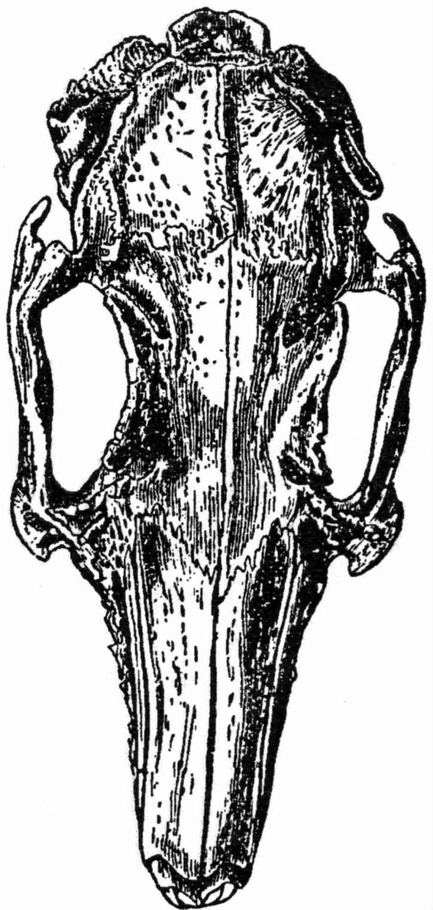
图11 半垂耳兔的头骨
阐明了左右两边耳道的不同方向，以及一般由此而引起的头骨的歪斜。左耳（图的右边）是垂下的
大型垂耳兔的下颚和野生兔的下颚之间的唯一区别就是，前者的上行支（ascending ramus）的后方边缘较宽而更弯曲。上颚和下颚的牙齿并没有任何差异，除了大门齿下面的小门齿稍微长一些。臼齿的大小，通过颧弧来测量，随着头骨宽度的增加也比例地增加了，但同头骨的增加了的长度不成比例。野生兔上颚中的臼齿齿槽的内缘完全是直线形的；但是在垂耳兔的某些最大头骨中，这条内缘显然是向内弯曲的。在一个标本中，在上颚两边的臼齿和前臼齿之间各有一枚多余的臼齿；但是这两个多余臼齿的大小并不一样，而且因为啮齿类没有七枚臼齿，所以这仅是一种畸形，虽然它是一种奇特的畸形。
在普通家养兔的其他五个头骨中，有些头骨在大小上接近上述的最大头骨，而其余的只比野生兔的头骨大一点，它们的头骨之所以值得注意，仅仅因为在上述大型垂耳兔的头骨和野生兔的头骨之间的差异上表现了一个完全的级进。然而，所有这些家养兔的上眼窝板都比野生兔的稍微大一点，并且所有这些家养兔的耳道随着外耳的增大都比野生兔的为大。在这五个头骨中，有些枕骨孔的下方凹口并不像野生兔的那样深，但是所有枕骨孔的上方凹口都是发育得很好的。
安哥拉兔的头骨，就像后五个头骨那样，在一般比例上、在大多数其他性状上都是介于大型垂耳兔和野生兔之间的。安哥拉兔只表现了一个奇异的性状：头骨的长度虽然远比野生兔的为长，但从后眼窝裂所测得的头骨的宽度则比野生兔的小三分之一左右。银灰兔、岑其拉兔和喜马拉雅兔的头骨都比野生兔的为长，上眼窝板也较宽；不过在其他方面则很少差异，除了枕骨孔的上方凹口和下方凹口没有野生兔的那样深，即不像野生兔的那样发达以外。莫斯科兔的头骨同野生兔的很少差异。波托·桑托的野化兔的上眼窝板一般都比英国野生兔的既狭又尖。
因为在我制成标本的最大型垂耳兔中，有些同山兔的颜色几乎一样，并且因为山同兔被肯定最近在法国曾经进行过杂交，所以大概可以这样设想：在上述的性状中有些是由于在远昔时期同山兔进行了杂交而发生的。因此，我对山兔的头骨进行了检查，但是这对于大型兔的头骨的特性并没有能够提供任何解释。然而有一个有趣的事实：当我把大英博物馆中的山兔的十个物种的头骨加以比较时，我发现了它们彼此之间的差异主要表现在同家养兔之间的差异完全一样的那几点上——即关于全体的比例、上眼窝板的形状和大小、颧骨的游离端的形状以及隔离枕骨和额骨的缝合线；这个事实例证了某一物种的变种往往表现有同属的其他物种的性状这一规律。还有家养兔的两种显著容易变异的性状，即枕头孔的轮廓以及枕骨“高台”（raised platform）的形状，在同种山兔的两个例子中也是同样容易变异的。
椎骨 在我检查过的所有骨骼中，椎骨的数目都是一致的，不过其中有两个例外：一是野化的小形波托·桑托兔，一是大型的垂耳兔。这二者像普通情形那样地具有七个颈椎、十二个带肋骨的胸椎，不过它们有八个腰椎，而不是七个腰椎。这一点是值得注意的，因为热尔韦发表的整个山兔属的腰椎数目都是七个。尾椎大体上相差两三个，不过我没有注意它们，正确地数出它们的数目是困难的。
在野生标本的第一颈椎、即寰椎（atlas）上，神经弧（neural arch）的前方边缘稍微有一点变异；或者是接近平滑的，或者是具有一个小型的上面正中突起；图中所示是我看到过的一个最大的突起（图12a）；但是应当注意，同大型垂耳兔的比较起来，它显得多么小，而且形状多么不同。大型垂耳兔的下面正中突起（b）在比例上也更厚而长。翼状部（alae）在轮廓上稍微呈现一点方形。
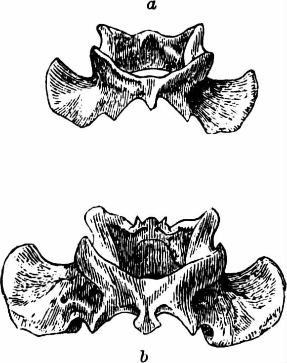
图12 寰椎，斜看它的下面
上图：野生兔。下图：山兔色的大形垂耳兔。a．上面正中突起；b．下面正中突起
第三颈椎 在野生兔中（图13、Aa），这个椎骨从下面看，有一个横突起，它斜向后方，而且是由单独一个尖形棒形成的；在第四椎骨上这个突起于正中稍现分叉。大型垂耳兔的这个突起是在第三椎骨分叉的（Ba），就像野生兔在第四椎骨分叉的情形那样。但是如果比较野生兔的和大型垂耳兔的前关节面，它们的第三颈椎之间的差异还要显著；因为野生兔的前上突起全然是圆形的，而大型垂耳兔的前上突起则是三裂的，并且有一个深的中央孔隙。大型垂耳兔的脊髓管漕在横的方面比野生兔的为长；而且动脉的通路在形状上也稍有不同。我认为在这个椎骨上所表现的这几种差异是很值得注意的。
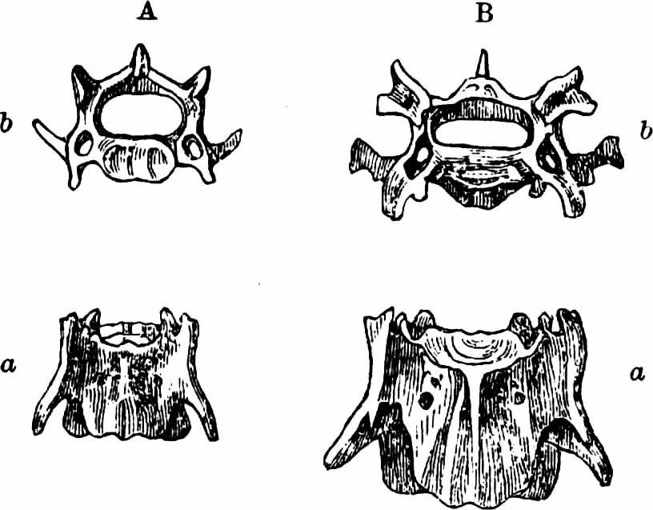
图13 第三颈椎
A．野生兔；B．山兔色的大型垂耳兔。a，a．下面；b，b．前关节面
第一胸椎 野生兔的髓棘（neural spine）有种种长度；有时很短，不过一般比第二胸椎的髓棘的一半长一点；我曾看到两个大型垂耳兔的第一胸椎的髓棘只有野生兔的第二胸椎的髓棘的四分之三长。
第九和第十胸椎 野生兔的第九胸椎的髓棘比第十胸椎的髓棘稍厚一点，其程度不过刚刚可以觉察得出；第十胸椎的髓棘明显地比前面椎骨的髓棘既厚而短。大型垂耳兔的第十、第九、第八椎骨的髓棘远比野生兔的厚得多，而且具有颇为不同的形状，甚至第七椎骨的髓棘多少也是这样。所以，脊椎的这一部分在外貌上和野生兔的同一部分是相当不同的，而它同某些山兔的物种的同一部分都以有趣的方式密切类似。安哥拉兔的、岑其拉兔的和“喜马拉雅兔”的第八、第九椎骨的髓棘只比野生兔的稍微厚一点。另一方面，有一只野化的“波托·桑托兔”它的大多数性状那同普通野生兔的不同，并且同大型垂耳兔的性状正好相反，而它的第九、第十椎骨的髓棘一点也不比几个前面椎骨的髓棘为大。在这同一个波托·桑托兔的标本上，第九椎骨的前横突起连一点痕迹都没有（参阅图14），而这个突起在所有英国野生兔中都是明显发达的，在大型垂耳兔中就更加发达了。从桑顿猎园（Sandon Park）捉到了一只半野生兔[2]，它的第十二胸椎下面的脉棘（haemal spine）是很发达的，我在其他标本中还没有看见过这些情形。
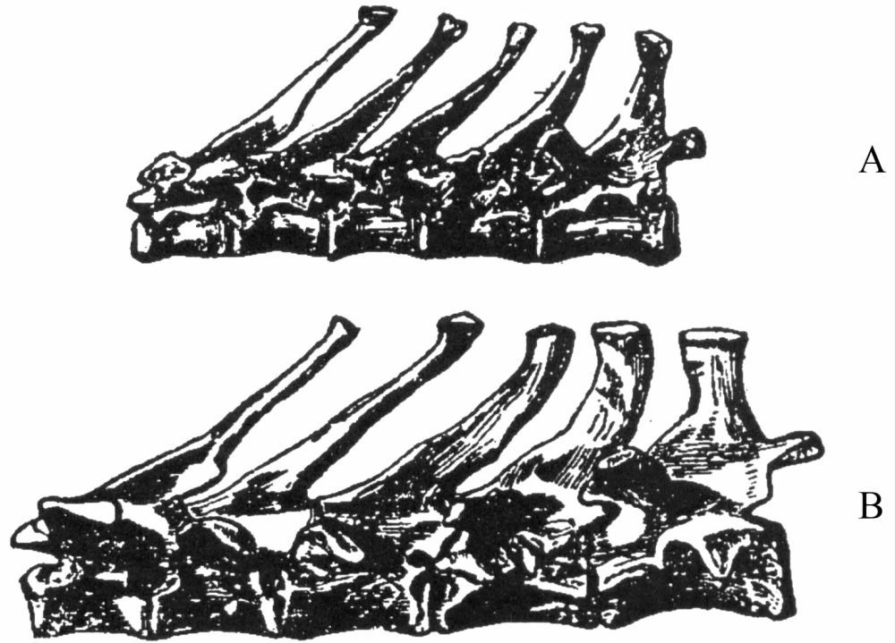
图14 第六至第十胸椎，侧面图
A．野生兔；B．山兔色的、大型的所谓西班牙兔
腰椎 我已经叙述了有八个腰椎而不是七个腰椎的两个例子。在一个英国野生兔的和一个野化的波托·桑托兔的骨骼中，第三腰椎有一个脉棘；下过在四个大型垂耳兔的骨骼中，第三腰椎则有一个很发达的脉棘。
骨盆 在四个野生标本中，骨盆的形状几乎是完全一样的；但是在几个家养品种中则可看出少许的差异。在大型垂耳兔中，肠骨的整个上部是笔直的，即比野生兔的向外倾斜较小；肠骨的前上部内唇（inner lip）上的结节在比例上更为显著。
胸骨 在野生兔中，后胸骨的后端（图15 A）是薄的而且稍微扩大一些；在某些大型垂耳兔（B）中，后胸骨的后端扩大得很多；而在其他标本（C）中，这一端到那一端的宽度几乎是一样的，不过末端非常粗。
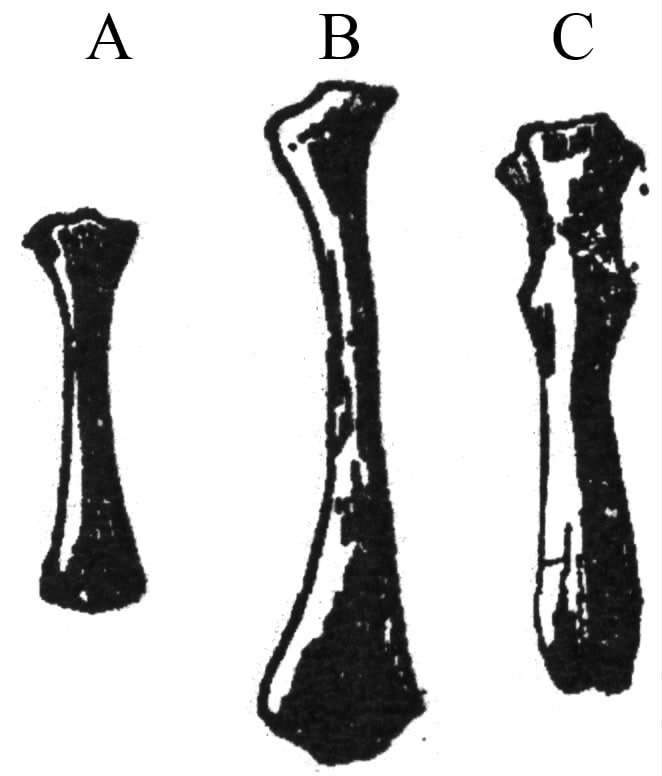
图15 胸骨的末节骨
A．野生兔；B．山兔色的垂耳兔；C．山兔色的“西班牙兔”（注：B图中上关节端的左方之角被损坏了，并且偶然地弄成了现在这个样子）
肩胛骨 肩峰（acromion）伸出一个长方形的棒，其末端为一斜结节，在野生兔中（图16A），这个结节的形状和大小都微有变异，就像肩峰的顶端的尖锐性和正在长方形棒下面的那部分的宽度微有变异一样。但在野生兔中，这些方面的变异是很微小的；在大型垂耳兔中，它们的变异是相当大的。例如，在一些标本（B）中，末端的斜结节发展成一个短棒的样子，而同长方形棒成一钝角。在另一个标本（C）中，这两个不相同的棒几乎成一直线。肩峰的顶端在宽度和尖锐性上有很大的变异，把图中的B，C和D加以比较即可看出。
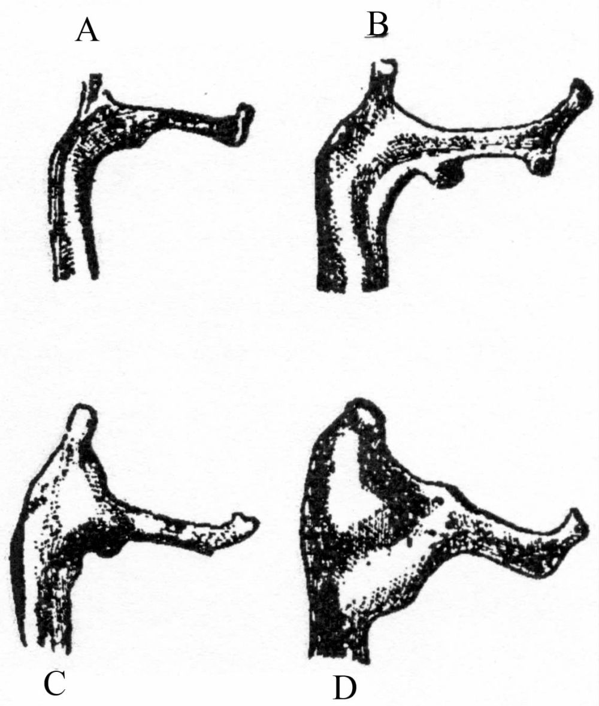
图16 肩胛骨的肩峰
A．野生兔；B，C，D．大型垂耳兔
四肢 在四肢上，我没有找出任何变异来；不过非常仔细地去比较它们的脚骨就太麻烦了。
现在我已经描述了我观察到的骨骼上的一切差异。要是不被许多骨的高度变异性或可塑性所打动，简直是不可能的。人们曾经反复不断地说过：只有作为肌肉之附着物的骨的隆起才在形状上发生变异，而且只有不重要的部分才能在家养下被改变，我们知道这种说法是多么错误。例如，没有人会说，枕骨孔、寰椎或第三颈椎是不重要的部分。如果图中所指出的野生兔和垂耳兔的几种椎骨是在化石状态下被发现的话，那么古生物学者们大概都会毫不犹豫地宣告它们属于不同的物种。
体部的使用和不使用的效果 在大型垂耳兔中，同一肢的诸骨的比例长度以及前肢同后肢的比例长度，同在野生兔中的几乎一样；但是在重量上，大型垂耳兔的后肢显然没有按照前肢的适当比例而有所增加。根据我的检查，大型垂耳兔的整个体部的重量相当于野生兔的2倍或2.5倍；大型垂耳兔的前肢和后肢的诸骨的总重（脚骨未计，因为其中小骨非常之多，难以弄干净）几乎按照同样的比例而有所增加；因此，四肢的骨重按照它们所支持的体重的适当比例而增加了。如果我们取体部的长度作为比较的标准，那么大型垂耳兔的四肢长度比按照比例而应增加的长度短一时半。还有，如果取头骨的长度作为比较的标准（头骨的长度，如前所述，并没有按照体部长度的适当比例而有所增加），那么四肢的长度比野生兔的短半英寸至四分之三英寸。因此，无论用什么作为比较的标准，大型垂耳兔的肢骨重量虽然按照其他部分的骨骼重量的相当比例而增加了，但其长度并不如此；我认为这一点大概可以用它们在许多世代中所过的少动生活来解释的。同时，肩胛骨的长度也没有按照体部长度的适当比例而有所增加。
包容脑子的骨箱的容量是更加有趣的一点，如前所述，在所有家养兔中，头骨的长度同其宽度的比例，比在野生兔中的都增大了。如果我们拥有同野生兔的大小大致相等的大量家养兔，那么测计和比较它们的头骨容量将是一件简单的工作，但是情形并非如此，因为几乎所有家养品种的体部都比野生兔的为大，而大型垂耳种类的重量比野生兔的大一倍以上。因为一种小型动物势必同一种大型动物一样地使用它的感觉、智力和本能，所以我们决不应当期望在体部方面大两倍或三倍的一种动物，也会在脑子方面大两倍或三倍[3]。我称过四只野生兔的和四只大型但不肥的垂耳兔的体重之后，我发现前者对后者的平均体重是1∶2.17；体部的平均长度为1∶1.41；而头骨的容量则为1∶1.15。由此我们可以知道，头骨的容量、也就是脑子的大小，同身体增加了的大小相比，则增加得很少；这一事实解释了在所有家养兔中为什么头骨的宽度在同它的长度比较下是狭的。
在下表的上半部我列举了10只野生兔头骨的统计数字，在下半部我列举了11只彻底家养化的种类的头骨的测计数字。因为这些个体在大小上大有不同，所以需要有某种标准，以资比较它们的头骨容量。我选择了头骨的长度作为最好的标准，因为在大型兔中，头骨的长度，如前所述，并没有像体部的长度那样地有所增加；但是，因为头骨同任何其他部分一样，在长度上是不同的，所以无论是头骨或者任何其他部分都不能提供一个完善的标准。
表中第一栏以英寸为单位举出了头骨全长的数字。我知道这些数字冒充了比实际可能的更大的精确性，但是我发现把用两脚规测得的正确长度记录下来，是麻烦最少的。第二列和第三列举出了观察时的体长和体重。第四列以小子弹重量表示了头骨的容量（头颅腔是用小子弹来填满的）；但不能说这些数字没有几喱（grains）之内的误差。第五列举出了按照同第1号野生兔相比较的头骨长度计算出来的应有头骨容量；第六列举出了实际容量和计算容量之差；第七列举出了增加或减少的百分率。例如，因为第5号野生兔比第1号野生兔的体部既短且轻，所以大概会预料到它的头骨容量也会较小；它的由于弹重量所表示的实际容量是875喱，比第一号野生兔的少97喱。但是，当比较这两只兔的头骨长度时，我们看到第一号的头骨长度为3.15英寸，第五号的头骨长度为2.96英寸；按照这个比率，以子弹的重量来表示，第5号的脑的容量应为913喱，比上述的实际容量仅多38喱。或者从另一方面来看（如第7列所示），这只第五号小兔的脑子每100喱仅轻4喱——这就是说，如果同第1号标准兔进行比较，还应重4％。我之所以取第1号兔作为比较的标准，是因为它的头骨有着充分的平均长度，而且有着最小的容量；所以它对于我要阐明的结论是最不利的；我的结论是：所有长期被家养的兔的脑子，无论是在实际上或者在同其头长和体长的比较上，都比野生兔的脑子缩小了。如果我用第3号爱尔兰兔作为标准，以下的结果还要更加显著一些。
再看一看表：前四只野生兔的头骨长度是一样的，而且这些头骨在容量上的差异也很微小。桑顿兔（Sandon rabbit）是有趣的，因为它们现在虽是野生的，但正像它们的特殊颜色和较长体部所阐明的那样，我们知道它是从一个家养品种传下来的；尽管如此，它们的头骨还是取得了野生种的正常长度和充分容量。以下的三只兔是野生的，但体部较小，并且它们的头骨容量也稍微小一些。三只波托·桑托的野化兔（8—10号）提供了一个令人困惑的例子；同英国野生兔相比较，它们的体部大大地缩小了，头骨的长度和容量也缩小了，不过其程度较轻。但是当我们比较这三只波托·桑托兔的头骨容量时，我们便会观察到其间有可惊的差异，这种差异同头骨长度的微小差异不发生关系，而且据我所信，同体部大小的任何差异也不发生关系；但是我没有个别地称过它们的体重。我几乎不能设想这三只生活在同样条件之下的兔在脑髓方面的差异会像头骨容量的比例差异所表示的那样大；而且我也不知道一个脑子是否可能比另一个脑子包含有多得多的液体。因此，我一点也不能解释这个例子。
表的下半部举出了关于家养兔的测计数宇；由此我们可以看出，同第1号野生兔相比较，所有家养兔的头骨容量都比我们根据头骨长度所预计出来的为小，不过其程度是很不相同的。第22项举出了七只大型垂耳兔的平均测计数字。这里就有问题发生了：在这七只大型垂耳兔中头骨平均容量的增加是否有我们根据大大增大了的体部所预计出来的那么大？我们可以试着从两方面来回答这个问题：在表的上半部中，我们举出了关于六只小型野生兔（第5号到第10号）的测计数字，我们发现它们的平均头骨长度比表中前三只野生兔的平均头骨长度短0.18英寸，平均头骨容量小91喱。这七只大型垂耳兔的平均头骨长度为4.11英寸，平均头骨容量为1136喱；所以它们的头骨长度比那六只小型野生兔的减少了的头骨长度增加五倍以上；因此，我们大概可以预计这七只大型垂耳兔的头骨容量会比那六只小型野生兔的减少了的头骨容量增加五倍；这样，平均增加的容量应为455喱，而实际只有155喱。再者，大型垂耳兔在体部的重量和大小上几乎同普通山兔一样，不过前者的头部更长；因而，垂耳兔如果野化了，那么大概可以预计它们的头骨容量会和山兔的头骨容量大致相同。但是情形远非如此；因为表中两只山兔（第23号，24号）的平均头骨容量远比那七只垂耳兔的平均头骨容量为大，以致后者必须增加21％，才能赶得上山兔的标准[4]。
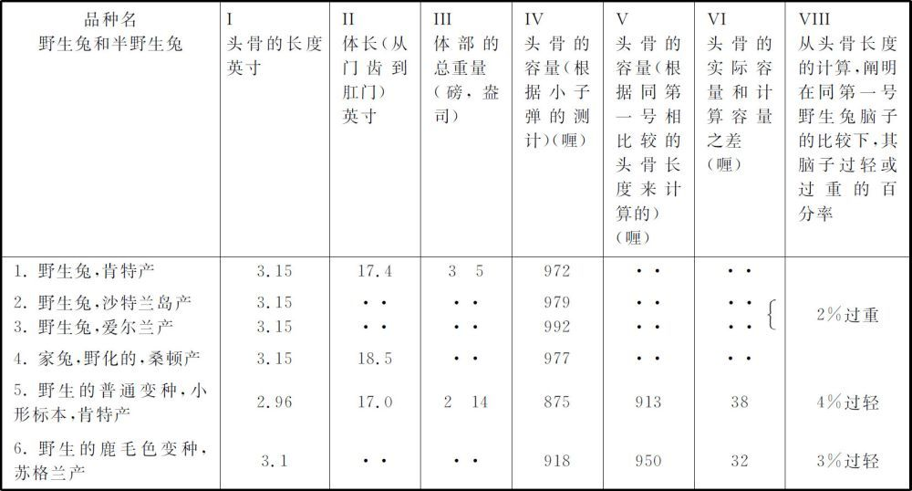
我在上面曾经说过，如果我们拥有许多同野生兔的平均大小相等的家养兔，那么比较它们的头骨容量就会容易了。这里，喜马拉雅兔、莫斯科兔、安哥拉兔（第11号、12号、13号）在体部和头骨上都比野生兔刚刚大一点，并且我们知道，它们的实际头骨容量比野生兔的为小，如果根据它们的头骨长度之差来计算（第七列），还要显著地小。这三只家养兔的脑袋的狭窄可以明显地看出来，而且从外形的测计上可以得到证明。岑其拉兔（第14号）显著地比野生兔为大，然而它的头骨容量只比野生兔的稍微大一点。第13号安哥拉兔提供了一个极其值得注意的例子；它的纯白色以及丝一般的长毛说明了它是长期被家养的。它的头部和体部都显著地比野生兔的为长，但是它的头骨的实际容量甚至比小形的野生波托·桑托兔还要小。根据头骨长度的标准，它的容量只有它应有的一半！我养过这种兔，它既非不健康，也不愚钝。这个关于安哥拉兔的例子使我非常吃惊，所以我重复了所有的测计，发现其中并无错误。我还用过其他标准——即体部的长度和重量以及肢骨的重量，来比较安哥拉兔同野生兔的头骨容量；即使根据这些标准，它们的脑子似乎还是显得太小了，虽然当用肢骨作为标准时，其程度较轻一些；后一种情形大概可以用下面一点来解释：这种自古以来就被家养的品种的四肢重量由于长期不断的少动生活而大大减少了。因此，在这个比其他品种更加安静、更易群居的安哥拉兔中，我推论它们的头骨容量确是显著地缩小了。
根据以上所举出的若干事实——即第一，喜马拉雅兔、莫斯科兔、安哥拉兔虽然在所有方面都比野生兔稍大，但它们的头骨实际容量则比野生兔的为小；第二，大型垂耳兔的头骨容量没有按照较小野生兔的头骨容量减少的同样比率而有所增加；第三，这些大型垂耳兔的头骨容量远比同它的大小几乎一样的山兔的头骨容量为小——我作出如下的结论：尽管在小型波托·桑托兔以及大型垂耳种类中头骨容量有着显著的差异，在所有长期被家养的兔中，它们的脑子决没有按照头部长度和体部大小增加的适当比例而有所增加，而且这些动物如果生活在自然状况之下前者的脑子实际上比后者是缩小了。如果我们记住，家兔由于在许多世代中的被家养和严密拘禁，因而无须在逃避各种危险以及寻求食物中运用它们的智力、本能、感觉以及随意运动（voluntary movements），那么我们就可以作出这样的结论：它们的脑子缺乏训练，结果便在发育上受到了损害。这样我们就看到了，在整个体制中最重要而且最复杂的器官也是被用进废退这一法则所支配的。最后，让我们把家养兔所经历过的比较重要改变以及我们所能隐约知道的原因总结一下。由于充分而富有营养的食物的供给，再加上运动的缺乏，并且由于对最重个体所进行的继续不断的选择，大型品种的体重便达到一倍以上。全部肢骨的重量按照体重增加的适当比例而增加了，不过后肢比前肢增加的为少；但是四肢的长度并没有按照适当的比例而增加，这可能是由于缺乏适当的运动而引起的。随着体部的增大，第三颈椎获得了第四颈椎所固有的性状；并且第八和第九胸椎同样地获得了第十和第十以下的胸椎所固有的性状。大型品种的头骨长度增加了，但没有按照体长增加的适当比例而增加；脑子没有按照适当的比例而增加，实际上甚至缩小了，因而脑袋是狭窄的，并且由于相关作用，面骨以及头骨总长便受到了影响。这样。它们的头骨便获得了狭窄的特性。由于未知的原因，额骨的上眼窝突起以及颧骨的游离一端在宽度上增加了；而且大型品种的枕骨孔一般远比野生兔的为浅。肩胛骨的某些部分以及胸骨的末端在形状上变为高度变异的。耳朵通过继续不断的选择在长度和宽度上格外地增大了；耳朵的重量，大概同肌肉的不使用有关，引起了它们的下垂；并且这影响了外耳道骨的位置和形状；由于相关作用，还轻微地影响了头骨上半部的几乎所有的骨，甚至影响了下颚的髁的位置。
[1] 华特豪斯：《哺乳动物志》，第二卷。第36页。
[2] 这种兔在桑顿猎园以及在斯塔福郡和士洛普郡的其他地方已经野化相当久了。据猎场看守人告诉我说，它们起源于各种颜色的家兔。它们的颜色现在已经发生变异了；不过许多这种兔的颜色是对称的，例如它们具有白色的脊纹，耳朵上的条斑，以及黑灰色头部上具有某些标记。它们比普通家兔的体部稍微长一点。
[3] 参阅奥温对这个问题的意见，他的论文曾于1862年在“英国动物学会”宣读，题为《人脑的动物学的意义》（Zoological Significance of the Brain，＆c．，of Man，＆c．）；关于鸟类，参阅《动物学会会报》，1月11日，1848年，第8页。
[4] 这个标准显然是相当低的，因为克利斯卜（Crisp）博士指出（《动物学会会报》，1861年，第86页），体重七磅的一只山兔的脑子的实际重量为210喱，体重三磅五盎司的一支兔的脑子的重量为125喱，这只兔的重量同表中第一号兔的重量相等。那么，表中第一号兔的头骨容量，根据子弹来测计应为972喱；而按照克利斯卜的125对210的比例，山兔的头骨，用子弹来测计应为1632喱，而不只是1455喱（在我的表中的最大一只山兔）。